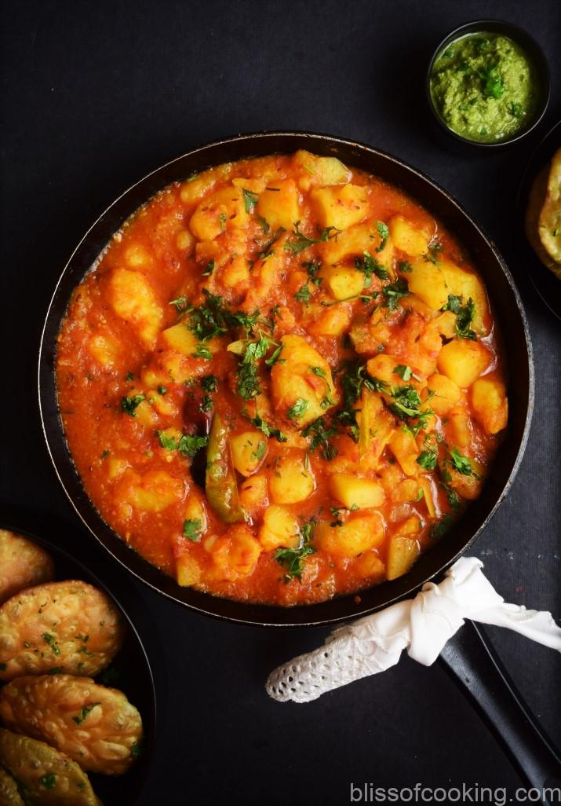

Aloo Matar Recipe
INGREDIENTS
- 1 tbsp butter
- 1 bay leaf
- 3 pods cardamom
- 1 inch cinnamon
- 4 cloves
- 1 tsp kasuri methi
- 1 onion (finely chopped)
- 1 tsp ginger garlic paste
- ¼ tsp turmeric
- 1 tsp kashmiri red chilli powder
- 1 tsp corainder powder
- ½ tsp cumin powder
- 1½ cup tomato puree
- 3 tbsp cashew paste
- 1 cup water
- 1 tsp salt
- 2 tbsp cream
- 2 tbsp paneer / cottage cheese (grated)
- ¼ tsp garam masala
- 2 tbsp coriander
INSTRUCTIONS
- firstly, add 1 tbsp butter and saute 1 bay leaf, 3 pods cardamom, 1 inch cinnamon, 4 cloves and 1 tsp kasuri methi. roast until the spices turn aromatic.
- now add 1 onion, 1 tsp ginger garlic paste and saute until the onions turn golden brown.
- further add ¼ tsp turmeric, 1 tsp chilli powder, 1 tsp coriander powder and ½ tsp cumin powder.
- now add 1½ cup tomato puree and saute until oil is released.
- also, add 3 tbsp cashew paste and saute for a minute.
- add in 1 cup water, 1 tsp salt. mix well.
- furthermore, add roasted potato and paneer.
- cover and boil for 2 minutes, or until the flavours are absorbed.
- add in 2 tbsp cream, 2 tbsp grated paneer and mix well.
- turn off the flame and add ¼ tsp garam masala and 2 tbsp coriander.
